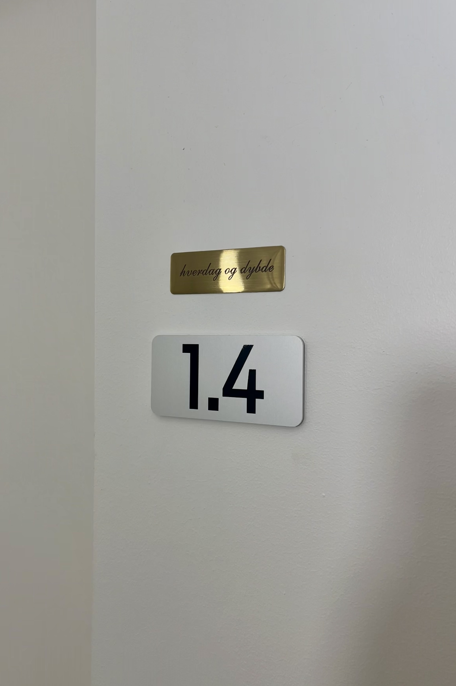

Jeg har skabt hverdag og dybde som et trygt og roligt rum, hvor vi sammen kan udforske det, der fylder – både det nære i hverdagen og de dybere lag i livet.
I mit arbejde lægger jeg vægt på nærvær, respekt og autencitet. For mig er relationen fundamentet for den forandring, der kan ske i terapien.
Forløsning af tidlige traumer og fastlåste reaktioner, uanset din alder.
En kreativ og dybdegående metode til at bevidstgøre det der hidtil har været ubevidst.
Arbejder med relationer, familiedynamikker og indre konflikter.
Fokus på tankemønstre, adfærd og konkrete forandringsværktøjer.